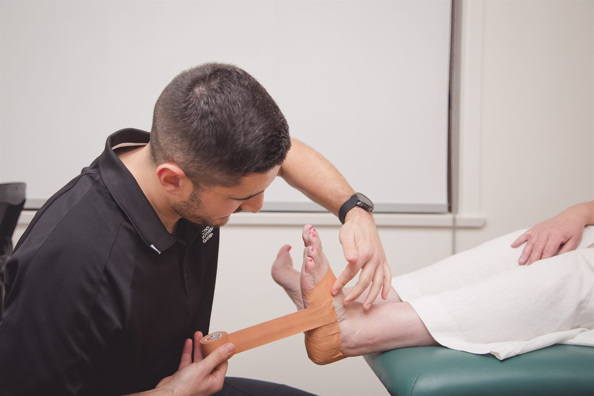

We provide physiotherapy for foot and ankle pain in Dapto, including ankle sprains, heel pain and tendon symptoms. Your assessment considers the demands of standing, walking, work or sport so rehabilitation fits what you need to do.

Some foot and ankle problems follow an obvious injury; others develop as activity or time spent standing changes. Useful details include where the pain is, whether it is worse on the first steps after rest, and how it behaves through the day.
These patterns guide questions during an assessment. They do not confirm a diagnosis or rule out a fracture.
We ask about the injury or onset, swelling, footwear and changes in walking, work or exercise. Let us know about diabetes, reduced sensation or circulation problems, as these can change the advice you need.
Assessment may include ankle movement, walking, balance and calf strength. More demanding tasks are introduced only when appropriate. If the findings suggest a bone injury or an Achilles rupture, urgent medical assessment takes priority.
Bring the shoes you use most and any existing reports. They help us understand the activities the foot needs to tolerate. We discuss footwear in that context rather than assuming one shoe type suits every problem.
After an ankle sprain, rehabilitation may work on movement, strength and balance before progressing to uneven ground or sport. A reduction in swelling does not by itself tell us that the ankle is ready for every activity.
For heel or tendon symptoms, the plan may include exercise and a temporary adjustment to the amount of standing, walking or training. We explain what response to look for and how to progress. Taping or other supports may be considered as part of the plan, depending on the assessment.
Your goals determine the later stages. A person returning to a standing job needs to build tolerance across a shift. Someone returning to field sport may also need to practise faster movement and changes of direction. Runners can find more detail about training adjustments on our running injuries page.
Some problems need medical or podiatry care alongside physiotherapy. We discuss this if skin, nail, footwear or other concerns fall outside what rehabilitation can address.
Seek urgent medical assessment if your foot or ankle is deformed, you cannot walk after an injury, or there is severe pain, marked swelling or new loss of feeling. A hot, red foot with fever also needs urgent care.
A sudden pop at the back of the ankle with difficulty pushing off or standing on tiptoe may indicate an Achilles rupture. Arrange urgent assessment and avoid testing it repeatedly.
If you have diabetes, seek prompt medical advice about a new foot wound, redness, swelling or pain. Skin and circulation problems need attention before an exercise plan.
Diagnosis, load management and a staged return-to-running plan for runners of every level.
Read moreServiceDiagnosis, treatment and staged return-to-sport rehabilitation for athletes at every level.
Read moreConditionKnee assessment for pain on stairs, swelling, tendon problems, arthritis and injuries.
Read moreBring the footwear you normally use and any injury reports. We can discuss the demands of your job or exercise routine at your Dapto appointment.